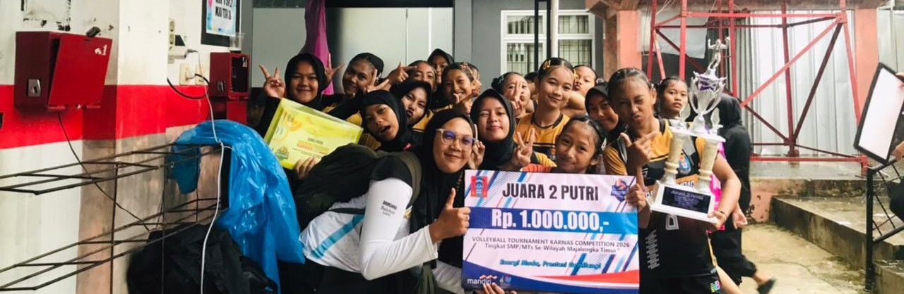
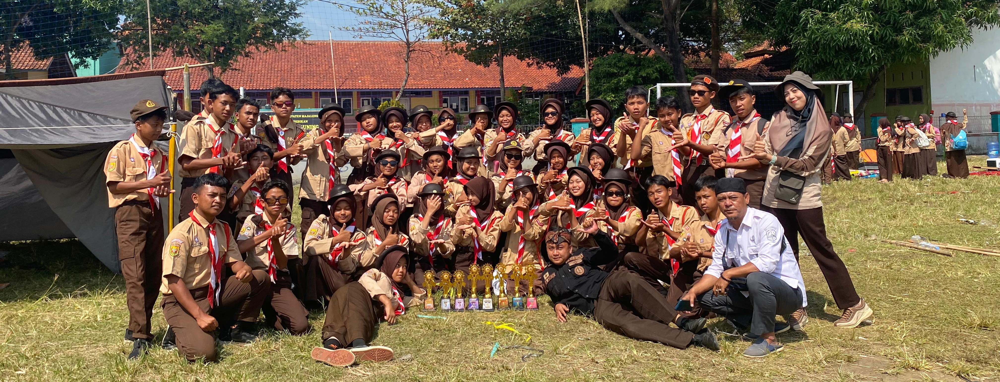
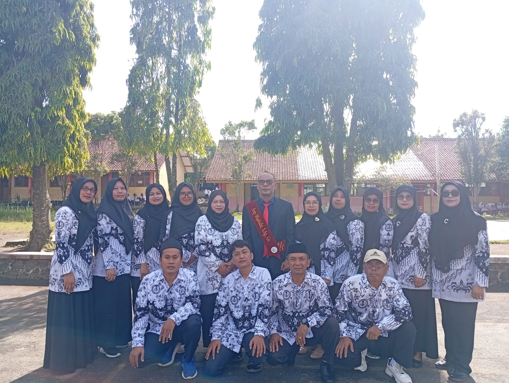

BERAKSI
SMPN 1 Sindang Beraksi adalah wujud semangat sekolah dalam menciptakan lingkungan belajar yang aktif, kreatif, dan inspiratif. Setiap guru dan siswa berperan aktif dalam berbagai kegiatan akademik maupun ekstrakurikuler, mulai dari olahraga, seni, hingga inovasi teknologi.
Dengan moto “Beraksi”, sekolah ini mendorong seluruh warga sekolah untuk berinisiatif, berkreasi, dan berkontribusi nyata bagi prestasi, karakter, dan kemajuan masyarakat. SMPN 1 Sindang bukan hanya tempat belajar, tetapi juga laboratorium aksi nyata untuk membentuk generasi unggul.
“Terwujudnya peserta didik yang berkarakter, berprestasi, berkompetensi, dan berakhlak mulia melalui lingkungan pendidikan yang aman, nyaman, dan berdaya saing.”
Informasi kelas 7, 8, dan 9.
Kegiatan pembinaan karakter dan kedisiplinan.
Futsal, Voli, dan kegiatan fisik lainnya.
Organisasi siswa untuk kepemimpinan.
Email: info@sekolah.com